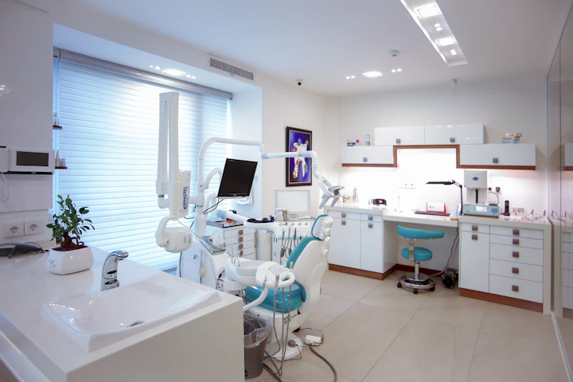
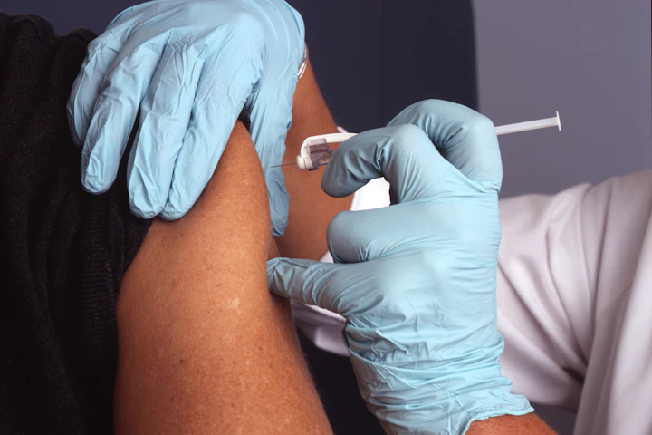
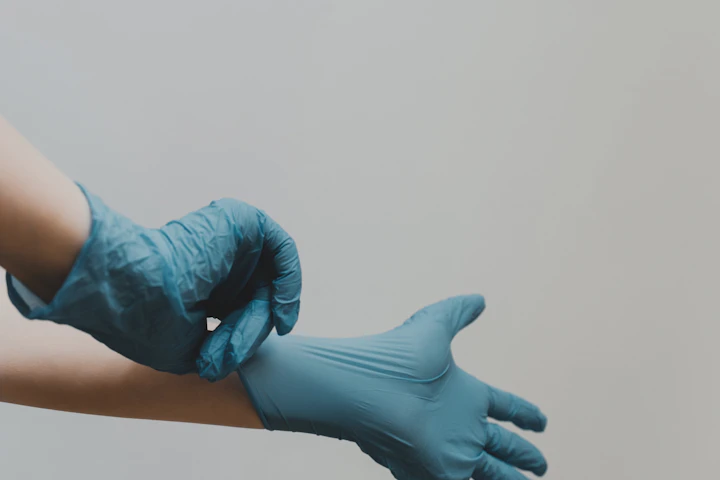
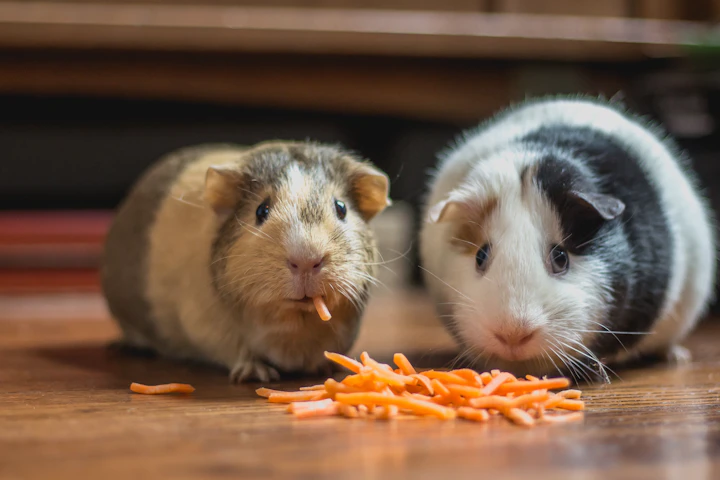

Tailored medical care for every stage of companionship.
From first pediatric vaccinations and routine baseline screens to delicate surgical interventions, restorative dental therapies, and senior comfort, explore our full clinical capabilities.

Low-Stress Handling
Fear-Free Certified Protocols
4 Licensed DVMs
Comprehensive Diagnostic Suite
An integrative, compassionate clinical spectrum.
We deliver cohesive medical attention combining preventive routine examinations with rapid point-of-care laboratory diagnostics and sterile soft-tissue surgical suites.
Primary Consultations
Thorough patient history reviews, nose-to-tail physical exams, behavioral guidance, and nutritional baseline formulation.
Advanced Diagnostics
Instant digital radiology, abdominal ultrasonography, and in-house laboratory blood chemistry panels delivering results in minutes.
Surgical Suite
Routine spay/neuter, soft-tissue mass excisions, foreign body retrievals, and one-on-one licensed nurse anesthesia monitoring.
Geriatric Wellness
Targeted osteoarthritis therapy, cognitive health screening, renal biomonitoring, and gentle physical comfort strategies.
General consultations that prioritize listening.
Whether addressing unexplained lethargy, dermatological irritation, digestive changes, or subtle behavioral shifts, our clinicians begin by understanding your daily observations.
Catching health conditions before symptoms manifest.
Pets age significantly faster than humans. Regular preventive screening establishes baseline organ parameters, identifying subtle metabolic or cardiovascular shifts early.
Pediatric Foundation
Focuses on congenital screening, initial core immunization series, intestinal parasite deworming, and early behavioral socialization.
- Congenital heart & hernia check
- Deciduous dental evaluation
- Microchip implantation & registration
Adult Vitality
Annual comprehensive wellness panels, lifestyle-appropriate vaccination boosters, dental plaque assessments, and weight trend tracking.
- Annual CBC & chemistry baseline
- Vector-borne disease screening
- Periodontal stage scoring
Senior Longevity
Biannual exams targeting early kidney insufficiency, osteoarthritis mobility changes, thyroid regulation, and cognitive health.
- Biannual renal & hepatic panels
- Doppler blood pressure measurement
- Joint mobility & pain scoring
Lifestyle-targeted vaccination protocols.
Every vaccine schedule is customized to protect against prevalent local infectious pathogens while minimizing unnecessary booster administration.
| Vaccine Name | Target Species | Classification | Recommended Schedule | Clinical Protection |
|---|---|---|---|---|
| Rabies | Canine & Feline | Core (Legally Required) | 1st at 16 wks, then every 1 to 3 yrs | Fatal zoonotic viral encephalitis transmission |
| DHPP / DAPP | Canine | Core | Puppy series (8, 12, 16 wks), booster at 1 yr, then every 3 yrs | Distemper, Hepatitis, Parvovirus, and Parainfluenza |
| FVRCP | Feline | Core | Kitten series (8, 12, 16 wks), booster at 1 yr, then every 3 yrs | Feline Viral Rhinotracheitis, Calicivirus, Panleukopenia |
| Bordetella & Parainfluenza | Canine | Lifestyle | Every 6 to 12 months for active dogs | Infectious tracheobronchitis (Kennel Cough) from boarding & parks |
| Leptospirosis | Canine | Lifestyle | Annual booster after initial 2-dose series | Bacterial disease from standing water and wildlife urine |
| Feline Leukemia (FeLV) | Feline | Lifestyle | Kitten series, then annually for outdoor cats | Retroviral immune suppression transmitted through bite wounds |

Rapid answers with modern imaging & lab testing.
Timely diagnostic insights enable targeted therapies without guesswork. Our in-house equipment delivers urgent clinical answers within minutes.
Oral health protects your pet's heart and kidneys.
Periodontal disease affects over 80% of dogs and cats by age three. Bacteria nesting under the gumline can enter circulation, damaging vital organs.
Gingivitis
Mild redness and swelling at the gumline. Reversible with professional ultrasonic scaling and home brushing before bone loss begins.
Early Periodontitis
Up to 25% periodontal attachment loss. Subgingival plaque forms periodontal pockets requiring curettage and antimicrobial rinses.
Moderate Periodontitis
25% to 50% bone loss around tooth roots. Accompanied by noticeable halitosis, discomfort while eating, and root exposure.
Advanced Disease
Over 50% bone loss, severe tooth mobility, and potential root abscesses. Surgical tooth extractions are performed to relieve chronic pain.
Full-mouth dental radiography & ultrasonic scaling.
Because 60% of pet teeth anatomy sits beneath the visible gumline, every dental prophylaxis at PawCare includes complete digital dental x-rays and continuous anesthesia support.
Explore Dental Procedures
Strict surgical sterility & patient-first safety.
Our surgical suite follows strict aseptic protocols. Every patient benefits from dedicated intravenous catheterization, continuous active patient warming, and personalized anesthetic regimens.
Urgent daytime care & emergency triage guide.
We handle daytime medical emergencies during regular clinic hours. If your pet experiences a crisis after hours, we immediately coordinate transfer to partner 24/7 specialty trauma hospitals.
Severe & Life-Threatening Signs
Requires immediate veterinary intervention. Notify our triage desk en route so the trauma bay can be prepared.
- Severe respiratory distress (choking, blue/pale tongue)
- Inability to urinate or straining painfully (especially male cats)
- Uncontrolled active bleeding or high-impact vehicular trauma
- Sudden collapse, paralysis, or active continuous seizures
- Ingestion of rodenticides, lilies (cats), chocolate, or human medications
Urgent Clinical Conditions
Significant discomfort or concerning symptoms that should be examined within 12 to 24 hours.
- Repeated vomiting or acute watery diarrhea with lethargy
- Eye discharge, squinting, or cloudiness (potential corneal ulcer)
- Severe limping or sudden inability to bear weight on a limb
- Painful ear scratching or vigorous head shaking (aural hematoma)
- Moderate superficial bite wounds or skin lacerations
Demo Disclosure: This is a fictional clinic demonstration. In an actual medical emergency, consult your local emergency veterinary hospital immediately.
Comfort, dignity, and mobility for aging pets.
Pets are considered seniors around 7 to 9 years of age. Tailoring their care program helps ease arthritis, manage cognitive health, and support kidney and thyroid function.
Building a foundation of lifelong vitality.
Early weeks set the stage for your young pet's physical development and emotional wellbeing. Our pediatric program guides families through vital steps.

Evidence-based nutrition for optimal wellness.
With thousands of commercial pet foods on the market, choosing the right diet can feel overwhelming. We provide unbiased, science-based nutritional consultations tailored to breed, age, and activity level.
Year-round shield against internal and external pests.
Parasites not only harm animal comfort but transmit serious zoonotic pathogens to human family members. We prescribe veterinary-grade oral and topical preventatives.
Heartworm Disease
Transmitted by mosquitoes; causes irreversible pulmonary artery and cardiac damage. Annual antigen blood tests and monthly oral chews provide 100% prevention.
Ticks & Lyme Disease
Rapid oral isoxazoline chewables that eliminate deer ticks and dog ticks before Lyme, Anaplasma, or Ehrlichia bacteria transmit into bloodstream.
Fleas & Dermatitis
Flea allergy dermatitis causes intense itching, secondary bacterial infections, and tapeworm transmission. Modern preventatives disrupt life cycles within hours.
Intestinal Worms
Routine fecal centrifugation identifies microscopic roundworms, hookworms, whipworms, and Giardia cysts before debilitating enteritis occurs.
Healing doesn't end when you leave our clinic.
Our veterinary nursing staff conducts proactive post-treatment follow-ups by phone, SMS, and secure photo checks to verify medication tolerability and peaceful healing.
Our transparent four-step service workflow.
A predictable, stress-free clinical workflow designed to keep pet parents informed every step of the way.
Inquiry
Book your appointment online or by phone with your preferred veterinarian and describe your pet's current status.
Evaluation
Comprehensive exam, history review, and calm stress-free physical check with gentle handling treats.
Treatment
Targeted medical therapy, vaccination, or diagnostic imaging performed with your explicit understanding and consent.
Monitoring
Nurse check-in, medication guidance, home care summaries, and scheduled progress evaluation.
Frequently Asked Questions About Services
Clear answers about surgical procedures, diagnostics, wellness plans, and visit preparation.
Compassionate healthcare tailored to your companion.
Experience medical precision, gentle handling, and transparent communication from a team that cherishes animals.